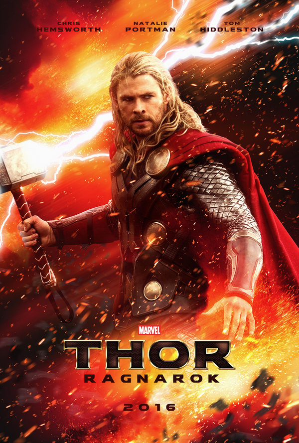

Thor: Ragnarok

Pais: Estados Unidos
Año:2017
Genero: Fantasia, Superhoeroes, Aventura, Accion
Dirección: Taika Waititi
Producción: Kevin Feige
Guion: Eric Pearson
Basada en: Thor de Stan Lee, Jack Kirby & Larry Lieber
Protagonistas: Chris Hemsworth
Tom Hiddleston
Cate Blanchett
Mark Ruffalo
Idris Elba
Tessa Thompson
Benedict Cumberbatch
Karl Urban
Jeff Goldblum
Anthony Hopkins
Compañías:
Productora: Marvel Studios
Distribución: Walt Disney Pictures.
Sinopsis
Asgard se encuentra en manos de una poderosa amenaza, la despiadada y todopoderosa Hela (Cate Blanchett),
que ha robado el trono y ha encarcelado a Thor (Chris Hemsworth), enviándole como prisionero hasta el otro extremo de la galaxia.
Sin su martillo, el mítico y poderoso Mjölnir, el Dios del Trueno se encontrará a sí mismo en una carrera contra el tiempo.
En el planeta Sakaar, Thor tendrá que luchar por su vida como un gladiador. Para escapar de su cautiverio, Thor tendrá que resultar
vencedor en una competición alienígena, y derrotar a su antiguo aliado y amigo Vengador El increíble Hulk (Mark Ruffalo). Pero,
por alguna misteriosa razón, Hulk no recuerda a su compañero Vengador. Claro que, por encima de todo, el objetivo del Dios del trueno
será volver a Asgard y parar el Ragnarok, un ciclo de vida y muerte sin fin que podría significar la destrucción total e inminente de la civilización asgardiana.